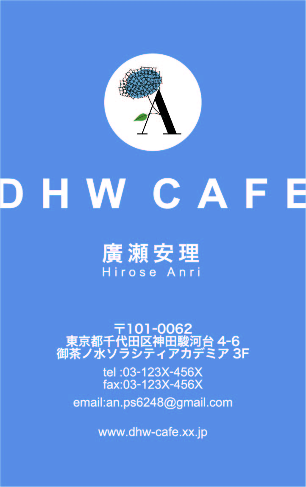
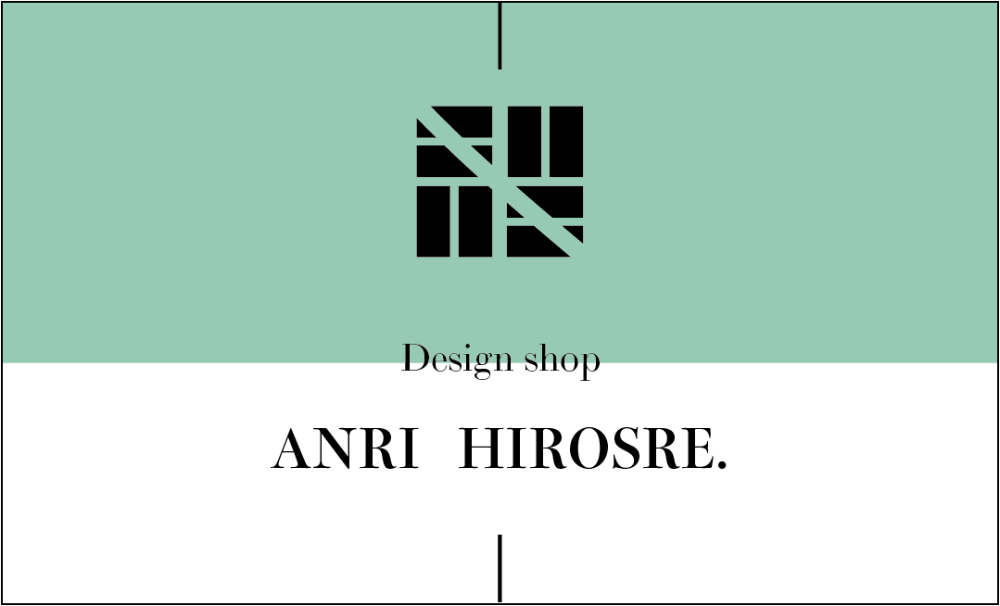
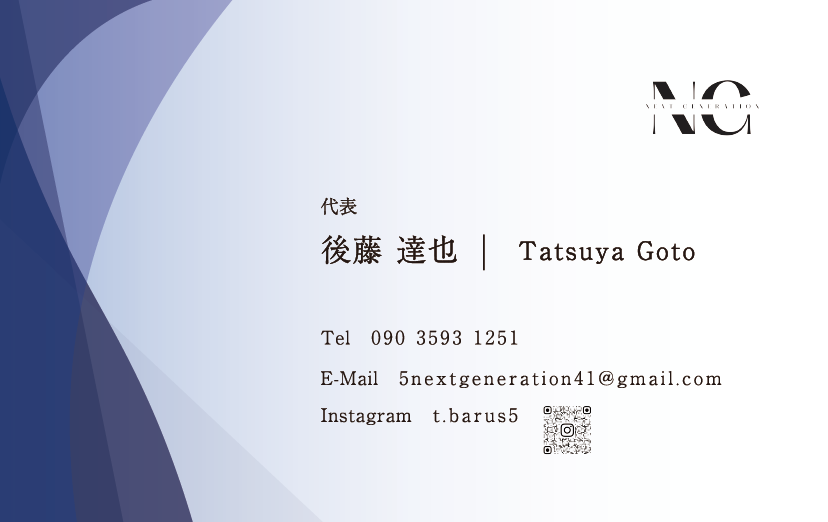
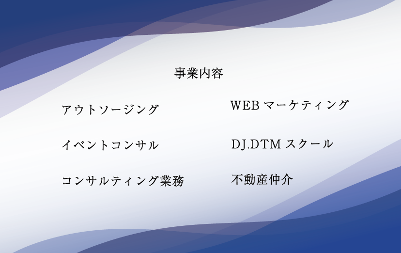
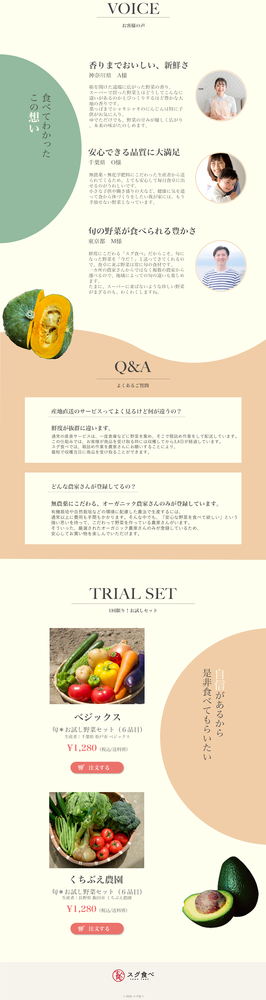
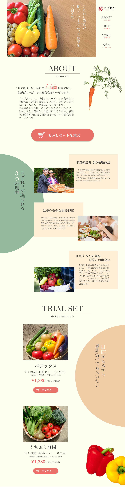
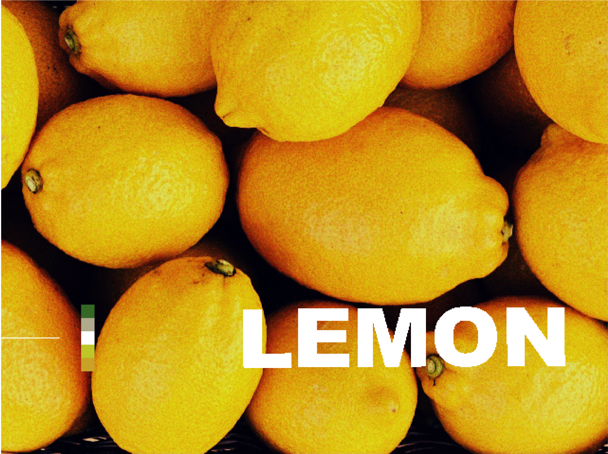
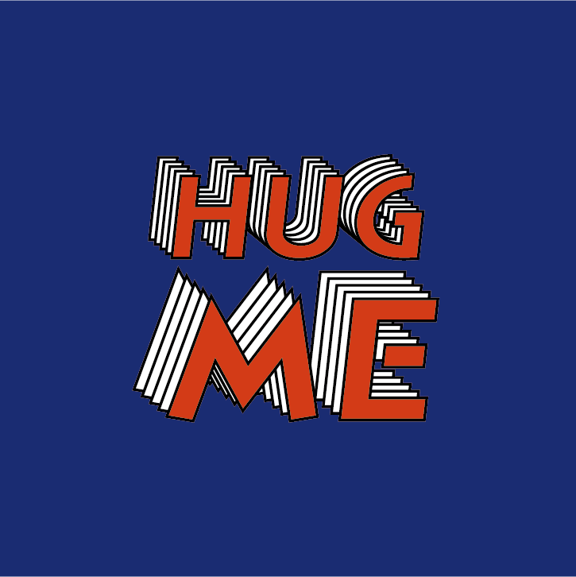
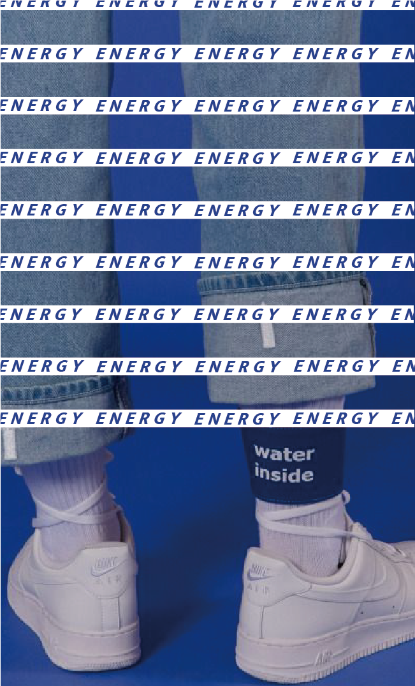
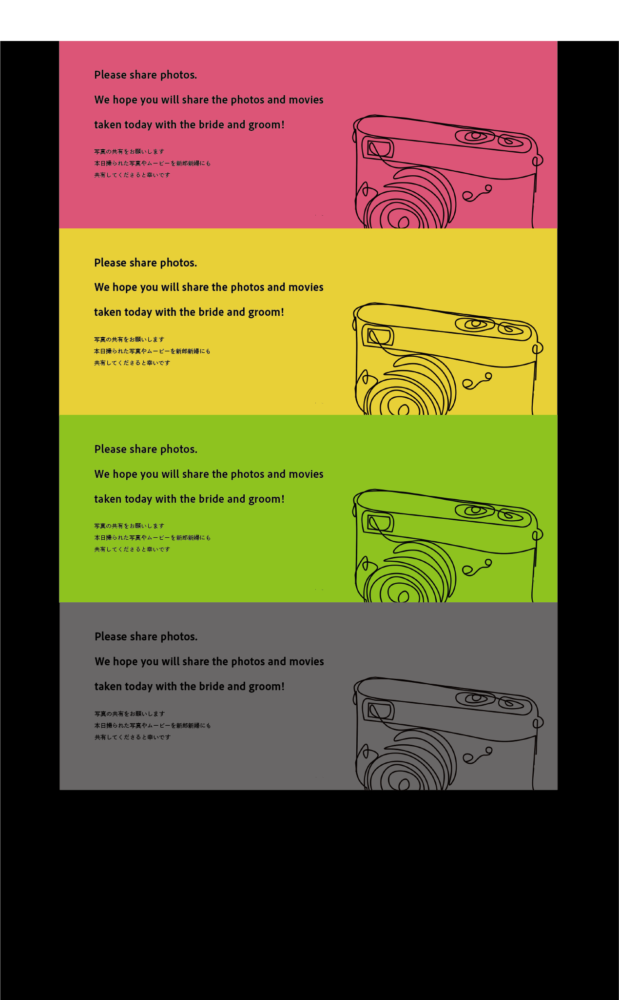

自分を表すロゴを作成するらめにイニシャル「A」と誕生日月の6月をイメージした「紫陽花」を組み合わせました。
シンプルな名刺ですので、会社名を少し名刺からはみ出すようにデザインにしました。
works

名刺

名刺
シンプルな名刺デザインに仕上げました。
高級感があるが親しみやすいデザインにする為色味は暗すぎない色を使用し、高級感を出す為にはウエイトの細い明朝体のフォントを使用しました。


名刺
営業で使用したいとオーダーいただきました。
堅苦しさがなく爽やかなデザインにしてほしいとの要望であった為、波をイメージ抽象的なデザインにしました。
プロフィールサイト
プロフィールサイトを作成しました。
メインカラーは好きな色でもあるオレンジ色を使用し、デザインは海外のWEBサイトを意識して作成しました。
WEBサイト
ヘアーサロンのサイトを作成しました。
都会に負けないオシャレな美容院にしたいというご希望をいただいたので、フォントや写真の配置にこだわりました。
料金表やヘアースタイルを細かく掲載し、お客様が美容院に来るまでの不安を少しでも払拭できるようにしました。


LPサイト
オーガニック食材のLPサイトデザインを作成しました。
ターゲットが40代主婦で柔らかい印象を再現するために円や曲線のデザイン組み込み、色味も彩度を落とした色を使用しました。




sticker,weddingcard
sticker,weddingcardをデザインしました。
©️2022 anri hirose